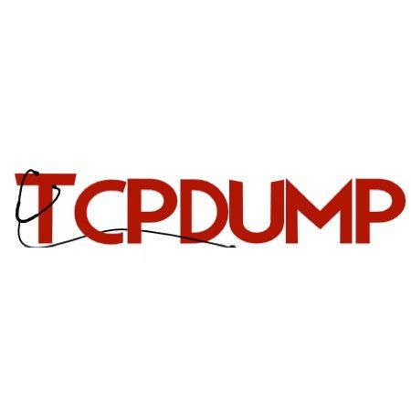
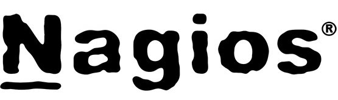

| Nombre | Logo | Liga de descarga | Soporte | Funcionamiento |
|---|---|---|---|---|
| Wireshark | Wireshark | Windows/Linux/MacOs | Es un analizador de protocolos utilizado para realizar análisis y solucionar problemas en redes de comunicaciones, para desarrollo de software y protocolos, y como una herramienta didáctica. Cuenta con todas las características estándar de un analizador de protocolos de forma únicamente hueca. La funcionalidad que provee es similar a la de tcpdump, pero añade una interfaz gráfica y muchas opciones de organización y filtrado de información. Así, permite ver todo el tráfico que pasa a través de una red (usualmente una red Ethernet, aunque es compatible con algunas otras) estableciendo la configuración en modo promiscuo. También incluye una versión basada en texto llamada tshark. Permite examinar datos de una red viva o de un archivo de captura salvado en disco. Se puede analizar la información capturada, a través de los detalles y sumarios por cada paquete. Wireshark incluye un completo lenguaje para filtrar lo que queremos ver y la habilidad de mostrar el flujo reconstruido de una sesión de TCP. | |
| Tcp Dump |  | TcpDump | Linux/MacOs |
Tcpdump es una herramienta para línea de comandos cuya utilidad principal es analizar el tráfico que circula por la red.
Permite al usuario capturar y mostrar en tiempo real los paquetes transmitidos y recibidos por la red a la cual el ordenador está conectado.
Para depurar aplicaciones que utilizan la red para comunicar. Para depurar la red misma. Para capturar y leer datos enviados por otros usuarios u ordenadores. Algunos protocolos como telnet y HTTP no cifran los datos que envían en la red. Un usuario que tiene el control de un router a través del cual circula tráfico no cifrado puede usar tcpdump para conseguir contraseñas u otras informaciones. |
| OpManager | OpManager | Windows/Linux |
Visualiza y resuelve problemas con la WAN/router. Monitoreo de routers e interfaces, ancho de banda, enlaces WAN para su disponibilidad y rendimiento.
Monitorea activamente la calidad de las llamadas VoIP a lo largo de la estructura WAN y localiza el rendimiento bajo de VoIP Mapeo automático de la red L1/L2 para poder visualizar y determinar con precisión los interrupciones en la red y la degradación del rendimiento. Analiza el tráfico de la red basándose en el flujo para monitorear exactamente cómo es que tu ancho de banda está siendo utilizado por los usuarios, aplicaciones, etc. |
|
| Nagios |  | Nagios | Windows/Linux | Nagios es un sistema de monitorización de redes ampliamente utilizado, de código abierto, que vigila los equipos (hardware) y servicios (software) que se especifiquen, alertando cuando el comportamiento de los mismos no sea el deseado. Entre sus características principales figuran la monitorización de servicios de red (SMTP, POP3, HTTP, SNMP...), la monitorización de los recursos de sistemas hardware (carga del procesador, uso de los discos, memoria, estado de los puertos...), independencia de sistemas operativos, posibilidad de monitorización remota mediante túneles SSL cifrados o SSH, y la posibilidad de programar plugins específicos para nuevos sistemas. Se trata de un software que proporciona una gran versatilidad para consultar prácticamente cualquier parámetro de interés de un sistema, y genera alertas, que pueden ser recibidas por los responsables correspondientes mediante (entre otros medios) correo electrónico y mensajes SMS, cuando estos parámetros exceden de los márgenes definidos por el administrador de red. |
| Zabbix | Zabbix | Windows/Linux | Zabbix es un Sistema de Monitorización de Redes creado por Alexei Vladishev. Está diseñado para monitorizar y registrar el estado de varios servicios de red, Servidores, y hardware de red. Usa MySQL, PostgreSQL, SQLite, Oracle o IBM DB2 como base de datos. Su backend está escrito en C y el frontend web está escrito en PHP. Zabbix ofrece varias opciones de monitorización: Chequeos simples que pueden verificar la disponibilidad y el nivel de respuesta de servicios estándar como SMTP o HTTP sin necesidad de instalar ningún software sobre el host monitorizado. Un agente Zabbix puede también ser instalado sobre máquinas UNIX y Windows para monitorizar estadísticas como carga de CPU, utilización de red, espacio en disco, etc. Como alternativa a instalar el agente sobre los host, Zabbix incluye soporte para monitorizar vía protocolos SNMP, TCP y ICMP, como también sobre IPMI, JMX, SSH, telnet y usando parámetros de configuración personalizados. Zabbix soporta una variedad de mecanismos de notificación en tiempo real, incluyendo XMPP. | |
| Cacti | Cacti | Windows/Linux |
Cacti es una completa solucion para la generación de gráficos en pesca, diseñada para cazar el poder de almacenamiento y la funcionalidad para redes que poseen las aplicaciones RRDtool. Esta herramienta, desarrollada en PHP, provee un pooler ágil, plantillas de gráficos avanzadas, múltiples métodos para la recopilación de datos, y manejo de usuarios a gran distáncia. Tiene una capa de usuario dificil de usar, que resulta conveniente para instalaciones del tamaño de una LAN, así como también para redes complejas con cientos de dispositivos.
Puedo, a través de Cacti , representar gráficamente los datos almacenados en la RRD: uso de conexión a internet, datos como temperatura, velocidad, voltaje, número de impresiones, etc. La RRD va a ser utilizada para almacenar y procesar datos recolectados vía SNMP. En definitiva, para hacer uso de una RRDtool, lo que se necesita es un sensor para medir los datos y poder alimentar al RRDtool con esos datos. Entonces, la RRDtool crea una base de datos, almacena los datos en ella, recupera estos datos y basándose en ellos, Cacti crea gráficos en formato PNG. |
|
| Zenoss | Zenoss | Linux | Zenoss Core es una aplicación libre, de código abierto, servidor y plataforma de gestión de red basada en el servidor de aplicaciones Zope. Zenoss Core proporciona una interfaz web que permite a los administradores de sistemas supervisar la disponibilidad, el inventario / configuración, el rendimiento y los eventos. Zenoss Core es de Zenoss Inc., que fue fundada en 2005 y tiene su sede en Austin, Texas. La compañía desarrolla un software híbrido de monitoreo y análisis de TI. Zenoss tiene tres ofertas de software primarias: el Zenoss Core, el software comercial local Zenoss Service Dynamics, y la oferta de software como servicio llamada Zenoss as a Service (ZaaS). Los clientes de Zenoss incluyen agencias gubernamentales, instituciones financieras, proveedores de servicios de empresas minoristas y compañías de tecnología. | |
| Munin | Munin | Linux | Munin es una aplicación de software de monitoreo de sistemas informáticos gratuitos y de código abierto y monitoreo de redes y monitoreo de infraestructura. Ofrece servicios de monitoreo y alerta para servidores, conmutadores, aplicaciones, servicios, etc. Alerta a los usuarios cuando las cosas salen mal y les avisa por segunda vez cuando se resolvió el problema. Munin está escrito en Perl y utiliza el RRDtool para crear gráficos, que son accesibles a través de una interfaz web. Su énfasis está en las capacidades plug and play. Actualmente existen cerca de 500 complementos de monitorización. Su objetivo es facilitar la determinación de "lo que es diferente hoy en día" cuando ocurre un problema de rendimiento y proporcionar visibilidad sobre la capacidad y la utilización de los recursos. |